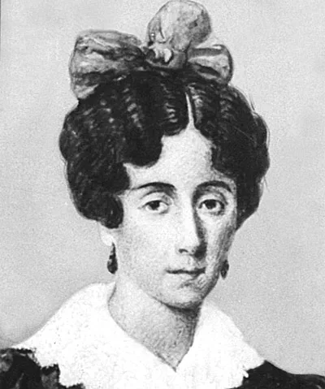
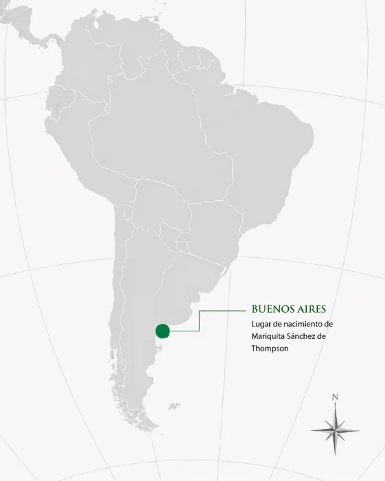

Mariquita Sánchez de Thompson
Buenos Aires, 1786 – 1868
Anfitriona de tertulias patriotas en Buenos Aires, en cuya casa se interpretó por primera vez, en 1813, el Himno Nacional Argentino.
← Volver a Heroínas
Presentación
Mariquita Sánchez de Thompson nació en Buenos Aires y fue una de las mujeres más influyentes del proceso de independencia argentina. Aunque no combatió en el campo de batalla, desempeñó un papel fundamental desde el ámbito político, social y cultural. Su casa se convirtió en un importante punto de encuentro para los patriotas, donde se debatían ideas revolucionarias y se impulsaban acciones en favor de la independencia. Fue una firme defensora de la educación, la libertad y la participación de las mujeres en la vida pública.

Logros destacados
Centro de reunión de los patriotas
Su hogar fue uno de los principales lugares donde se reunían figuras destacadas de la Revolución de Mayo para debatir el futuro político del país.
Primera interpretación del Himno Nacional
En su casa se realizó la primera interpretación pública del Himno Nacional Argentino en 1813.
Promotora de la educación y la cultura
Impulsó el desarrollo cultural e intelectual de Buenos Aires mediante reuniones y tertulias.
Referente de la independencia argentina
Su participación política y social la convirtió en una de las mujeres más importantes del proceso independentista.
Su aporte a la independencia argentina y sudamericana
Las luchas independentistas de América del Sur estuvieron conectadas entre sí. Aunque algunas de estas mujeres no actuaron directamente en el actual territorio argentino, sus acciones contribuyeron a debilitar el dominio español y a fortalecer la emancipación del continente. De esta manera, también favorecieron, directa o indirectamente, la consolidación de la independencia argentina.
Aporte directo- Apoyó activamente la causa revolucionaria.
- Su casa funcionó como un espacio de reunión para los patriotas.
- Colaboró desde el ámbito político, social y cultural.
- Contribuyó a difundir las ideas de independencia.
- Favoreció la organización y consolidación del movimiento revolucionario.
- La primera interpretación pública del Himno Nacional Argentino en su casa fortaleció la identidad nacional naciente.
Ideas
Los principios que guiaron su compromiso con la causa independentista:
- Defendió los ideales de libertad e independencia.
- Promovió la educación como herramienta para construir una nación libre.
- Consideraba importante la participación de las mujeres en la vida política y cultural.
- Apoyó la construcción de una sociedad basada en los ideales ilustrados.
Acciones
Lo que hizo, concretamente, desde el ámbito civil y cultural:
- Organizó tertulias donde se debatían ideas revolucionarias.
- Recibió a importantes líderes patriotas.
- Apoyó la Revolución de Mayo.
- Difundió ideas independentistas.
- Colaboró desde el ámbito civil con el movimiento emancipador.
- Favoreció la organización política mediante encuentros entre revolucionarios.
Legado
Cómo es recordada y por qué continúa siendo una figura fundamental:
- Es una de las mujeres más importantes de la historia argentina.
- Su figura representa la participación femenina en la construcción política del país.
- Su casa quedó vinculada para siempre con el Himno Nacional Argentino.
- Es recordada por su compromiso con la educación, la cultura y la independencia.
Línea de tiempo de Mariquita Sánchez de Thompson
-
1786
Nacimiento. Nace en Buenos Aires, en el Virreinato del Río de la Plata.
-
1810
Revolución de Mayo. Apoya el movimiento iniciado con la Revolución de Mayo desde su entorno social y político.
-
1813
Himno Nacional. En su casa se interpreta por primera vez de forma pública el Himno Nacional Argentino.
-
Décadas posteriores
Vida cultural y política. Continúa participando activamente en la vida cultural y política de Buenos Aires.
-
1868
Fallecimiento. Muere en Buenos Aires.
Su casa fue uno de los espacios donde comenzaron a construirse los ideales de la Argentina independiente.